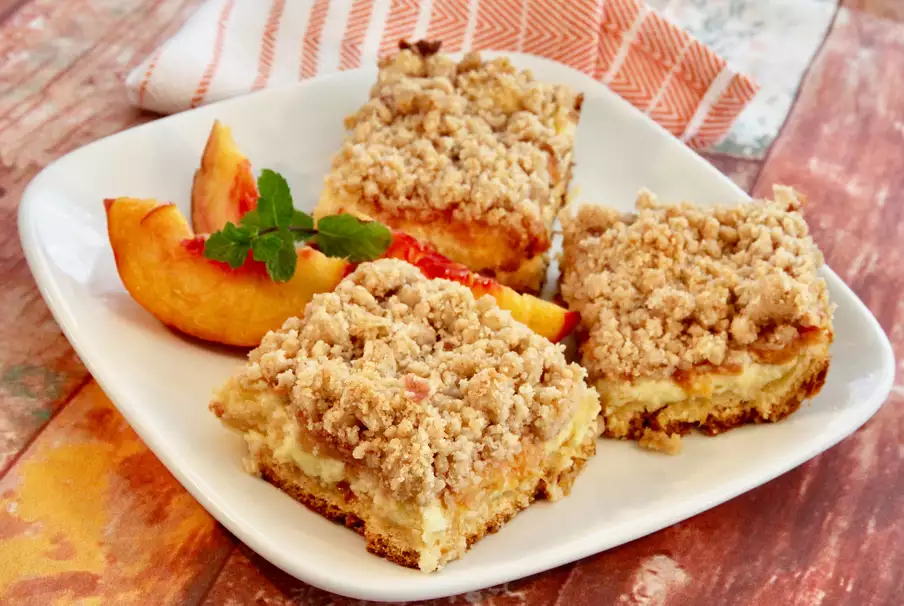

Peach Cobbler Cheesecake Bars

Description
Peach cobbler and cheesecake is an extraordinary combination. The peaches are bursting with sweet, fresh flavor, and the cheesecake filling is creamy and luscious. Together, they are divine!
Ingredients
Crust:
- 1 (8 ounce) package refrigerated crescent roll dough (such as Pillsbury)
- 1/2 cup peach preserves
Filling:
- 12 ounces Neufchatel cheese, softened
- 1/2 cup white sugar
- 2 eggs, lightly beaten
- 1 teaspoon almond extract
- 3 large fresh peaches - peeled, pitted, and sliced
Topping:
- 1 1/2 cups all-purpose flour
- 1/4 cup brown sugar
- 1/4 cup white sugar
- 1 teaspoon ground cinnamon
- 1/4 teasppon salt
- 1/2 cup melted unsalted butter
Steps
- Preheat the oven to 350 degrees F (175 degrees C). Spray a 9x13-inch baking pan with cooking spray.
- Separate crescent dough into 2 rectangles and place in the bottom of the prepared pan, forming the crust. Press dough to cover the bottom of the pan, sealing perforations. Spread peach preserves on top of dough.
- Place Neufchatel cheese, sugar, eggs, and almond extract in a large bowl. Beat using an electric mixer on high speed until smooth. Spread mixture evenly over preserve-covered dough. Place peach slices on top.
- Whisk flour, brown sugar, white sugar, cinnamon, and salt together in a small bowl. Pour melted butter over mixture and stir using a fork until you have coarse crumbs. Sprinkle crumb topping over peaches.
- Bake in the preheated oven until golden and firm, about 40 minutes. Remove from the oven and let cool completely before cutting into bars, about 30 minutes. Serve warm or chilled.